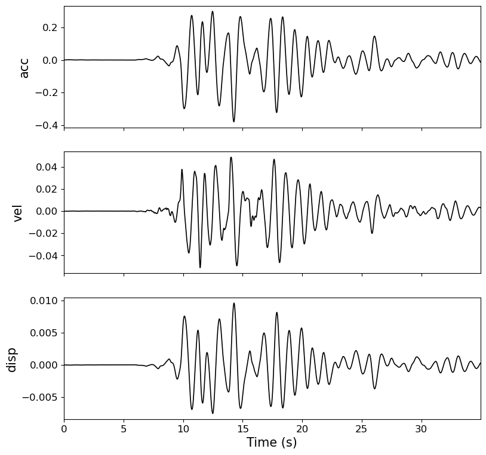

[1]:
%matplotlib inline
Linear Dynamic Time-History Analysis of SDOF System
see :func:gmspy.lida.
[2]:
import gmspy as gm
ts, acc = gm.load_gm_examples('Kocaeli')
dt = ts[1] - ts[0]
T = 1
pi = 3.1415926
omega = pi * 2 / T
u, v, d = gm.lida(dt, acc, method='Nigam_Jennings',
omega=omega, damp_ratio=0.05, plot=True)
